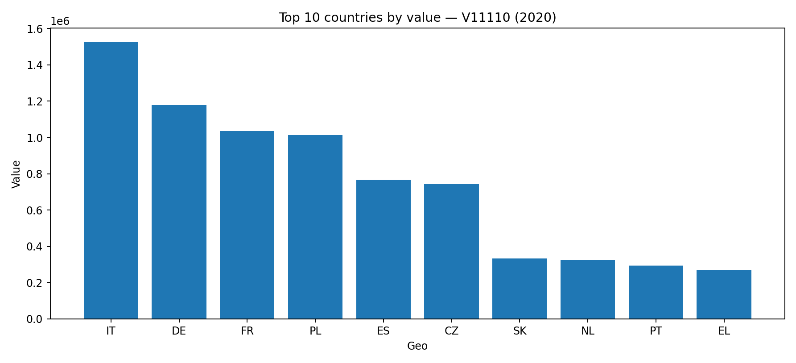
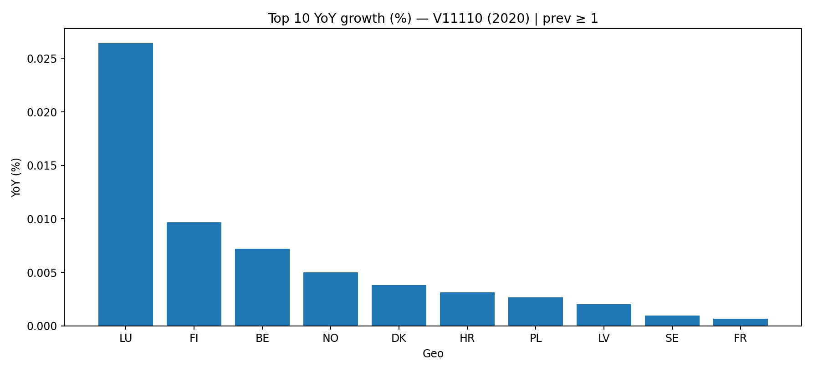
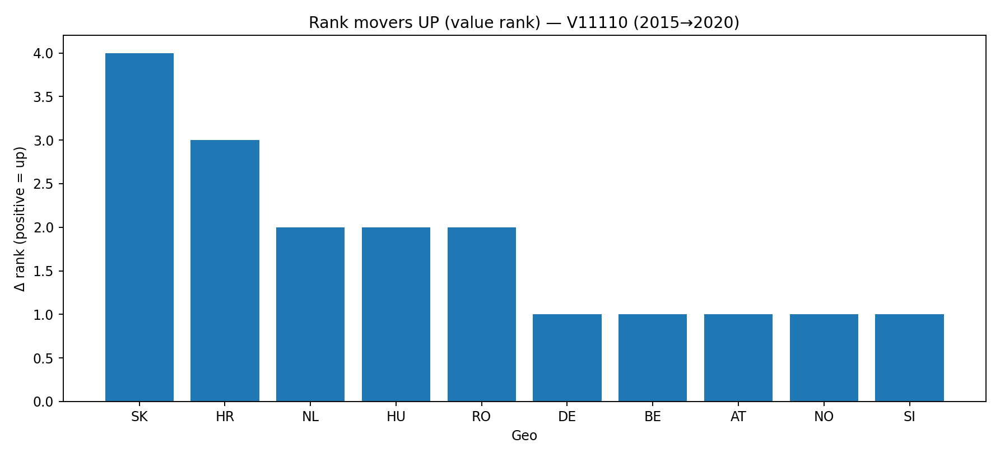
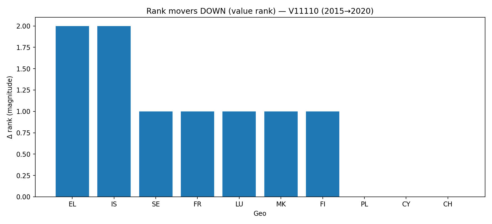
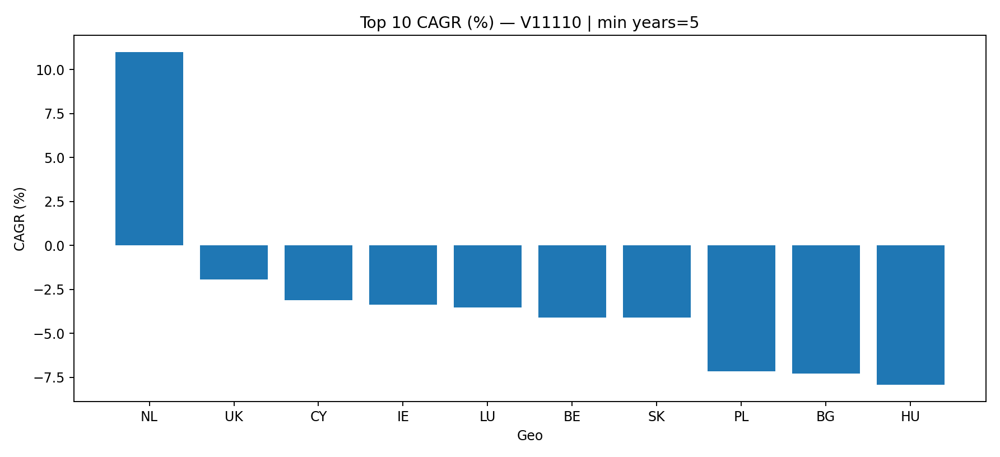
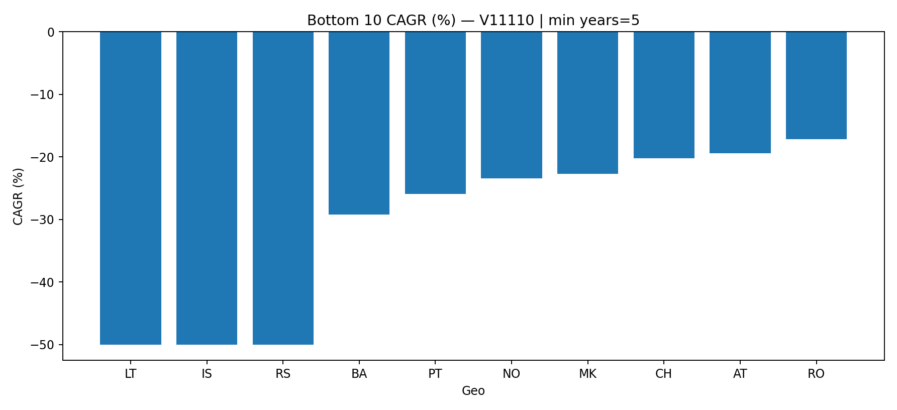

Executive snapshot
This report is built from the curated Gold layer. Country rankings and YoY are computed after
aggregating to one row per (geo, indicator, year), which removes duplicated slices in the raw export.
Rank delta base year
2015
YoY rules: prev ≥ 1.0.
The chart is clipped at ±200.0% for readability, but the table shows real values (formatted).
CAGR rules: min years ≥ 5.
CAGR charts are clipped at ±50.0% for readability.
Key takeaways
Latest-year market leader
In 2020, IT leads V11110 by total country value (1.53M).
Fastest YoY growth (cleaned)
In 2020, LU grows 0.0% YoY (prev=3.78K).
Why YoY can look 'zero'
If Value and Prev are very close, YoY becomes a small fraction and rounds to 0.0% at 1 decimal. Use Δ abs to interpret small changes.
Why YoY is filtered
YoY excludes near-zero baselines (prev < 1) and the chart is clipped at ±200% for readability.
Biggest rank gain (value rank)
SK improves by +4 positions from 2015 to 2020 (Δ%=27.6%).
How ties are handled
Ranks are computed with dense ranking (ties share the same rank). Rank deltas reflect changes in the ordered position, not row index.
Best long-run performer (CAGR)
NL shows the strongest CAGR: 10.99% over 2005→2020 (min years=5).
Interpreting negative CAGR
Negative CAGR means the indicator decreases over the period. Whether that is good or bad depends on the indicator semantics.
Data quality signals
Loaded from outputs-checks/quality_report.json
{
"checks": {
"bronze": {
"cols": 17,
"has_key": true,
"rows": 773560
},
"gold_country_indicator_year": {
"cols": 4,
"null_rate_value": 0.0,
"rows": 6259386
},
"gold_yoy_growth": {
"cols": 6,
"rows": 5636348,
"yoy_max": Infinity,
"yoy_min": -100.0
},
"silver": {
"cols": 7,
"missing_expected_cols": [],
"null_rate_value_num": 0.0,
"null_rate_year": 0.0,
"rows": 6259386,
"value_num_max": 11975121582.0,
"value_num_min": 0.0,
"year_max": 2020,
"year_min": 2005
}
},
"errors": [],
"files": {
"data-bronze\\sbs_na_ind_r2_bronze.parquet": {
"exists": true,
"size_bytes": 23758642
},
"data-gold\\gold_country_indicator_year.parquet": {
"exists": true,
"size_bytes": 15608812
},
"data-gold\\gold_yoy_growth.parquet": {
"exists": true,
"size_bytes": 57670898
},
"data-silver\\sbs_na_ind_r2_silver.parquet": {
"exists": true,
"size_bytes": 30515298
}
},
"status": "OK"
}
Top 10 countries by value
Source: data-gold/gold_country_indicator_year.parquet · aggregated (country-year)

| Geo |
Year |
Value |
| IT |
2020 |
1.53M |
| DE |
2020 |
1.18M |
| FR |
2020 |
1.03M |
| PL |
2020 |
1.01M |
| ES |
2020 |
766.28K |
| CZ |
2020 |
742.85K |
| SK |
2020 |
332.46K |
| NL |
2020 |
324.31K |
| PT |
2020 |
294.66K |
| EL |
2020 |
270.29K |
Top 10 YoY growth
Source: data-gold/gold_yoy_growth.parquet · country-only · prev ≥ 1.0

| Geo |
Year |
Value |
Prev |
Δ abs |
YoY |
| LU |
2020 |
3.78K |
3.78K |
1.00 |
0.0% |
| FI |
2020 |
93.12K |
93.11K |
9.00 |
0.0% |
| BE |
2020 |
166.12K |
166.11K |
12.00 |
0.0% |
| NO |
2020 |
80.04K |
80.04K |
4.00 |
0.0% |
| DK |
2020 |
78.40K |
78.40K |
3.00 |
0.0% |
| HR |
2020 |
95.06K |
95.06K |
3.00 |
0.0% |
| PL |
2020 |
1.01M |
1.01M |
27.00 |
0.0% |
| LV |
2020 |
48.68K |
48.68K |
1.00 |
0.0% |
| SE |
2020 |
204.83K |
204.83K |
2.00 |
0.0% |
| FR |
2020 |
1.03M |
1.03M |
7.00 |
0.0% |
If YoY looks near zero, check Δ abs. When Value and Prev are very close, YoY becomes a tiny fraction and may round to 0.0% at 1 decimal.
If this section still looks odd, raise YOY_MIN_PREV_VALUE (e.g., 10, 100, 1000) depending on unit scale.
Trajectory: rank delta + long-run trend
Rank movement is computed from aggregated country-only ranking (no duplicated geo).
Positive Δ rank means the country moved up in value rank. Dense ranking is used to handle ties (equal values share rank).
Rank movers UP

| Geo | Rank (base→last) | Δ Rank | Δ% |
|---|
| SK |
#11 → #7 |
+4 |
27.6% |
| HR |
#20 → #17 |
+3 |
11.2% |
| NL |
#10 → #8 |
+2 |
21.7% |
| HU |
#14 → #12 |
+2 |
11.7% |
| RO |
#13 → #11 |
+2 |
14.1% |
| DE |
#3 → #2 |
+1 |
38.6% |
| BE |
#15 → #14 |
+1 |
17.0% |
| AT |
#17 → #16 |
+1 |
1.7% |
| NO |
#22 → #21 |
+1 |
0.6% |
| SI |
#21 → #20 |
+1 |
5.1% |
Rank movers DOWN

| Geo | Rank (base→last) | Δ Rank | Δ% |
|---|
| EL |
#8 → #10 |
-2 |
-5.3% |
| IS |
#31 → #33 |
-2 |
1.5% |
| SE |
#12 → #13 |
-1 |
-14.8% |
| FR |
#2 → #3 |
-1 |
1.8% |
| LU |
#33 → #34 |
-1 |
0.6% |
| MK |
#28 → #29 |
-1 |
-19.9% |
| FI |
#18 → #19 |
-1 |
-3.0% |
| PL |
#4 → #4 |
0 |
26.8% |
| CY |
#30 → #30 |
0 |
0.4% |
| CH |
#24 → #24 |
0 |
-4.6% |
Structural trend (CAGR)
Source: data-gold/gold_structural_metrics.parquet · country-only · min years=5 · charts clipped at ±50.0%
Top CAGR

| Geo | Years | CAGR | Δ% |
|---|
| NL |
2005→2020 |
10.99% |
377.61% |
| UK |
2006→2018 |
-1.94% |
-20.93% |
| CY |
2005→2020 |
-3.11% |
-37.78% |
| IE |
2005→2020 |
-3.37% |
-40.20% |
| LU |
2005→2020 |
-3.53% |
-41.67% |
| BE |
2005→2020 |
-4.09% |
-46.58% |
| SK |
2005→2020 |
-4.11% |
-46.75% |
| PL |
2005→2020 |
-7.16% |
-67.17% |
| BG |
2005→2020 |
-7.30% |
-67.90% |
| HU |
2005→2020 |
-7.93% |
-71.05% |
Bottom CAGR

| Geo | Years | CAGR | Δ% |
|---|
| LT |
2005→2020 |
-100.00% |
-100.00% |
| IS |
2015→2020 |
-100.00% |
-100.00% |
| RS |
2016→2020 |
-63.79% |
-98.28% |
| BA |
2011→2020 |
-29.17% |
-95.52% |
| PT |
2005→2020 |
-25.95% |
-98.90% |
| NO |
2007→2020 |
-23.40% |
-96.88% |
| MK |
2011→2020 |
-22.70% |
-90.14% |
| CH |
2009→2020 |
-20.18% |
-91.63% |
| AT |
2005→2020 |
-19.43% |
-96.09% |
| RO |
2005→2020 |
-17.17% |
-94.07% |
Tables show real values. Negative CAGR means the indicator decreases over the period; whether that is good or bad depends on the indicator semantics.
If CAGR still looks weird, the issue is usually sparse time-series (few valid years) or a structural break in the underlying series.
Eurostat Lakehouse — Gold Report (local) · generated by python + pandas + matplotlib + jinja2